6. Dimensionality Reduction of Astronomical Spectra¶
The Sloan Digital Sky Survey is a photometric and
spectroscopic survey which has operated since the year 2000, and has resulted
in an unprecedented astronomical database. The database contains
photometric observations like those we explored in the previous sections,
but also includes a large number of spectra of various objects. These spectra
are  -dimensional data vectors (generally, 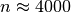)
for each observed object, where each observation in the vector
measures the flux of a particular wavelength of light.
-dimensional data vectors (generally, 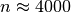)
for each observed object, where each observation in the vector
measures the flux of a particular wavelength of light.
Because of the large dimensionality of this data, visualization of the dataset becomes very challenging. This is where unsupervised dimensionality reduction methods can be useful. One of the most commonly used dimensionality reduction methods in astronomy is Principal Component Analysis (PCA). We won’t go through the mathematical details here, but PCA essentially seeks dimensions of the input data which contain the bulk of the variability present in the data. The model has this form:

Here 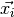 represents an individual spectrum. 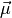
is the mean spectrum for the dataset. The remaining term encodes the
contributions of each of the eigenvectors 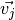. The
eigenvectors are generally arranged so that those with the smallest  contain the most signal-to-noise, and are the most important vectors in
reconstructing the spectra. For this reason, truncating the sum at some
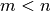 can still result in a faithful representation of the input.
contain the most signal-to-noise, and are the most important vectors in
reconstructing the spectra. For this reason, truncating the sum at some
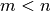 can still result in a faithful representation of the input.
For astronomical spectra, the result is that the first few coefficientts 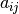 of each spectrum encode a good low-dimensional representation of the spectrum. We’ll use this fact to visualize this data in a meaningful way.
6.1. SDSS Spectral Data¶
Note
The information in this section is available in an interactive notebook 09_dimensionality_example.ipynb, which can be viewed using iPython notebook. An online static view can be seen here.
In the directory $TUTORIAL_HOME/data/sdss_spectra/, you’ll find the script which fetches a set of spectra from the Sloan Digital Sky Survey. Each individual spectrum is at a particular redshift, and can have data missing in certain spectral regions. So that this doesn’t affect our analysis, the spectra have been de-redshifted and the gaps have been filled using the PCA-based algorithm described in [1]. In the process of shifting and gap-filling, the spectra have been down-sampled so that the number of attributes is 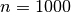.
Once the dataset is downloaded, it can be read-in as follows:
>>> import numpy as np
>>> data = np.load('spec4000_corrected.npz')
>>> data.files
['y', 'X', 'z', 'wavelengths']
>>> data['X'].shape
(4000, 1000)
>>> print data['labels']
['unknown' 'star' 'absorption galaxy' 'galaxy' 'emission galaxy'
'narrow-line QSO' 'broad-line QSO' 'sky' 'Hi-z QSO' 'Late-type star']
The variable X contains 4000 spectra, each with 1000 attributes. In addition, the file includes a classification code y, and redshift z for each spectrum, and an array wavelengths which can aid in plotting spectra. Let’s plot a few of these to see what they look like, making sure to choose a representative of each of the interesting classes:
>>> import pylab as pl
>>> def plot_spectral_types(data):
... X = data['X']
... y = data['y']
... wavelengths = data['wavelengths']
... labels = data['labels']
... for i_class in (2, 3, 4, 5, 6):
... i = np.where(y == i_class)[0][0]
... l = pl.plot(wavelengths, X[i] + 20 * i_class)
... c = l[0].get_color()
... pl.text(6800, 2 + 20 * i_class, labels[i_class], color=c)
... pl.subplots_adjust(hspace=0)
... pl.xlabel('wavelength (Angstroms)')
... pl.ylabel('flux + offset')
... pl.title('Sample of Spectra')
calling plot_spectral_types(data) gives the following figure:
A sample from among the most interesting classes of object. These objects are classified based on their emission and absorption characteristics.
There are 4000 spectra in this file, each with 1000 attributes. Visualizing a dataset of this size can be very difficult. We could plot all 4000 spectra as we did above, but the plot would quickly become too complicated. As a first step, it might be helpful to ask what the average spectrum looks like. To do this, we’ll plot the mean, but first we’ll normalize the spectra. Because the spectra represent galaxies at distances that range over several hundreds of light-years, their total flux varies greatly. Thus it will help if we normalize the spectra. For this we’ll use the scikit-learn preprocessing module. We’ll then plot both the mean and standard deviation to give us an idea of the data we’re working with:
>>> from sklearn.preprocessing import normalize
>>>
>>> def plot_mean_std(data):
... X = data['X']
... wavelengths = data['wavelengths']
...
... X = normalize(X)
... mu = X.mean(0)
... std = X.std(0)
... pl.plot(wavelengths, mu, color='black')
... pl.fill_between(wavelengths, mu - std, mu + std, color='#CCCCCC')
... pl.xlim(wavelengths[0], wavelengths[-1])
... pl.ylim(0, 0.06)
... pl.xlabel('wavelength (Angstroms)')
... pl.ylabel('scaled flux')
... pl.title('Mean Spectrum')
Calling plot_mean_std(data) gives the following figure:
The mean and standard deviation of the normalized spectra. Some of the
largest variation is found at wavelengths at which Hydrogen absorbs and
emits photons (Hydrogen is by far the most abundant atom in the universe).
For example, the line at 6563 is known as Hydrogen- , and is
often seen in emission (spiking up) in quasars and other active galaxies.
, and is
often seen in emission (spiking up) in quasars and other active galaxies.
The interesting part of the data is in the gray shaded regions: how do spectra vary from the mean, and how can this variation tell us about their physical properties? One option to visualize this would be to scatter-plot random pairs of observations from each spectrum. We’ll create a function to visualize this:
>>> def plot_random_projection(data, rseed=25255):
... # rseed is chosen to emphasize correlation
... np.random.seed(rseed)
... i1, i2 = np.random.randint(1000, size=2)
...
... # create a formatter which works for our labels
... format = pl.FuncFormatter(lambda i, *args: labels[i].replace(' ', '\n'))
...
... X = normalize(data['X'])
... y = data['y']
... labels = data['labels']
... wavelengths = data['wavelengths']
...
... pl.scatter(X[:, i1], X[:, i2], c=y, s=4, lw=0,
... vmin=2, vmax=6, cmap=pl.cm.jet)
... pl.colorbar(ticks = range(2, 7), format=format)
... pl.xlabel('wavelength = %.1f' % wavelengths[i1])
... pl.ylabel('wavelength = %.1f' % wavelengths[i2])
... pl.title('Random Pair of Spectra Bins')
Calling plot_random_projection(data) gives the following plot:
A scatter-plot of a random pair of observations from the data. These show a clear correlation.
There is a clear correlation between these two measurements. That is, if you know the value of one, then you could quite accurately predict the value of the other. This shows us that some of the spectral bins do not add much information, and can be ignored. One could imagine proceeding by trial and error, plotting pairs of points and seeing which ones provide the most interesting information, but this would be very tedious. Instead, we can use an automated technique for dimensionality reduction, one well-known example of which is Principal Component Analysis.
6.2. Principal Component Analysis¶
Principal Component Analysis (PCA) is an often-used tool in astronomy
and other data-intensive sciences. In a
sense, it automates the trial-and-error process discussed in the previous
section, and finds
the most interesting linear combinations of attributes, so that
high-dimensional data can be visualized in a 2D or 3D plot. Scikit-learn
has methods to compute PCA and several variants. Classic PCA
(sklearn.decomposition.PCA) is based on
an eigenvalue decomposition of the data covariance, so that for  points, the computational cost grows as 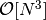. This means
that for large datasets like the current one, the fit can be very slow. You
can try it as follows, but the computation may take up to several minutes
for this dataset:
points, the computational cost grows as 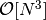. This means
that for large datasets like the current one, the fit can be very slow. You
can try it as follows, but the computation may take up to several minutes
for this dataset:
>>> from sklearn.decomposition import PCA
>>> pca = PCA(n_components=4)
>>> X = normalize(data['X'])
>>> X_projected = pca.fit_transform(X) # warning: this takes a long time!
Fortunately, scikit-learn has an alternative method that is much faster. The speed comes at a price: it is based on random projections, so the results are not as robust as the normal method. But for tasks such as ours where we are seeking only a few of a large number of eigenvectors, it performs fairly well. To keep our results consistent between runs, we’ll explicitly set the random seed for the fit. You should repeat this with several different random seeds to convince yourself that the results are consistent:
>>> from sklearn.decomposition import RandomizedPCA
>>> rpca = RandomizedPCA(n_components=4, random_state=0)
>>> X_proj = rpca.fit_transform(X)
>>> X_proj.shape
(4000, 4)
X_proj is now a reduced-dimension representation of X, where the lower-index columns are the most important dimensions. We can visualize the spectra now using the first two columns:
>>> def plot_PCA_projection(data, rpca):
... y = data['y']
...
... # create a formatter which works for our labels
... labels = data['labels']
... format = pl.FuncFormatter(lambda i, *args: labels[i].replace(' ', '\n'))
...
... X_proj = rpca.transform(X)
... pl.scatter(X_proj[:, 0], X_proj[:, 1], c=y, s=4, lw=0, vmin=2, vmax=6, cmap=pl.cm.jet)
... pl.colorbar(ticks = range(2, 7), format=format)
... pl.xlabel('coefficient 1')
... pl.ylabel('coefficient 2')
... pl.title('PCA projection of Spectra')
Calling this function as plot_PCA_projection(data, rpca) gives the following plot:
A scatter-plot of the first two principal components of the spectra.
We now have a two-dimensional visualization, but what does this tell us? Looking at the PCA model in the equation above, we see that each component is associated with an eigenvector, and this plot is showing 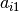 and 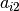 where
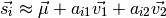
Visualizing the eigenvectors can give insight into what these components mean:
>>> def plot_eigenvectors(data, rpca):
... wavelengths = data['wavelengths']
...
... l = pl.plot(wavelengths, rpca.mean_ - 0.15)
... c = l[0].get_color()
... pl.text(7000, -0.16, "mean", color=c)
...
... for i in range(4):
... l = pl.plot(wavelengths, rpca.components_[i] + 0.15 * i)
... c = l[0].get_color()
... pl.text(7000, -0.01 + 0.15 * i, "component %i" % (i + 1), color=c)
...
... pl.ylim(-0.2, 0.6)
... pl.xlabel('wavelength (Angstroms)')
... pl.ylabel('scaled flux + offset')
... pl.title('Mean Spectrum and Eigen-spectra')
Calling this function as plot_eivenvectors(data, rpca) gives the following plot:
The mean spectrum and the first four eigenvectors of the spectral data.
We see that the first eigenspectrum (component 1) tells us about the relative difference in flux between low wavelengths and high wavelengths - that is, the color of the spectrum. Component 2 tells us a lot about the emission and absorption characteristics in the various lines, and also in the so-called “4000 angstrom break” due to Hydrogen absorption. Detailed analysis of these components and eigenspectra can lead to much physical insight about the galaxies in the fit (See, for example [1]).
Nevertheless, there are some weaknesses here. First of all, PCA does not do a good job of separating out galaxies with different emission characteristics. We’d hope for a projection which reflects the fact that narrow spectral features are very important in the classification. PCA does not do this. Later, in Exercise 3, we’ll explore some alternative nonlinear dimensionality reduction techniques which will address this deficiency of PCA.